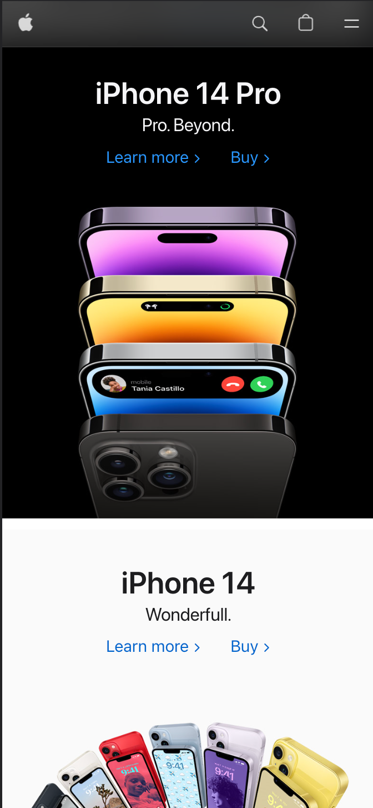

Design Principles Document
Jeremy A. Herrera
Visual Hierarchy
Apple
apple.com I think that the Apple page complies with the principle of visual hierarchy since when entering the page the user will immediately see the most important elements, which in this case would be the Iphone 14, due to the large size and central position of the images and titles. As the user scrolls down the page, it shows the items that follow in level of importance, such as the AppleWatch, Ipad and MacBook Pro, keeping the large central images and simple titles to present each product. So I think a clear and effective visual hierarchy is present.
Fitt's Law
Netflix
netflix.comI think that the netflix page complies very well with Fitt's Law since when one enters the page the buttons and the options for the user are quite clear. Mainly the page focuses on the user being able to create an account and hire their services. In the event that the user already has an account, the page intuitively guides the user to log in, as it is the second largest and most striking button. So basically, these are the 2 main options that are presented to the user, and the most used. Then, as the user scrolls down, it finds information for less common questions and options, but still there it decreases the options to 6, which are the most frequently asked questions the user may have, and then invites the user again to create an account and hire their services.
White Space and Clean Design
The Google home page complies very well with the "White Space and Clean Design" principle, as it is a very minimalist page, with a large, centered page name, and a large, centered, and simple search bar. All this helps to focus the user's attention on the search bar, which is basically the most important thing and the main function of this page. Apart from this and a few small elements, most of the page is white, which helps the user not to be distracted by any other element and makes the page look cleaner and more effective.